半夏
具有燥湿化痰、降逆止呕的功效，常用于治疗湿痰咳嗽和胃气上逆。
党参
补气健脾，用于气血两虚、体倦乏力等症状。
山萸肉
滋补肝肾，益精明目，适用于肝肾不足引起的腰膝酸软和视力减退。
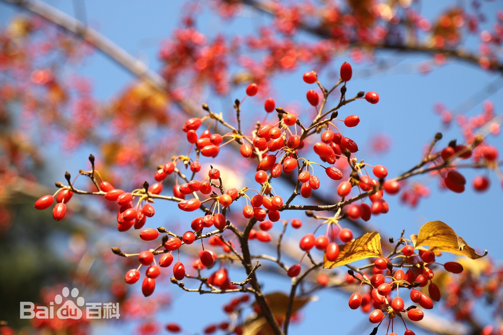肉豆蔻
温中散寒，行气止痛，用于脾胃虚寒引起的腹痛腹泻。
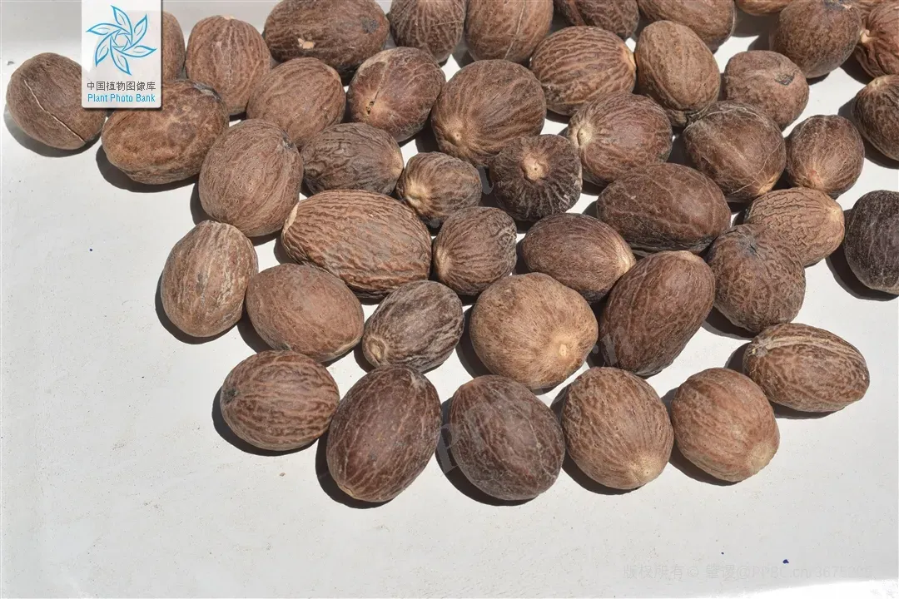豆蔻
理气和中，用于治疗胸闷腹胀、食欲不振。
防风草
祛风解表，用于风寒感冒、头痛身痛。
鱼胆草
清热解毒，用于咽喉肿痛、牙痛等症。
路路通
活血化瘀，用于跌打损伤、瘀血疼痛。
胆木
清热燥湿，用于湿热黄疸、带下等症。
山姜
温中散寒，用于胃寒呕吐、腹痛。
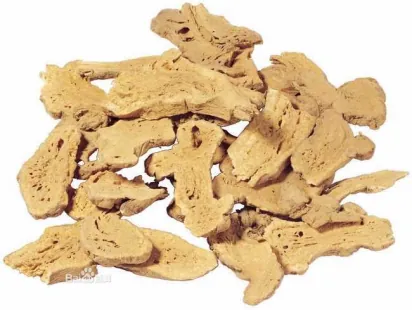萝藦
清热解毒，用于痈肿疔疮、蛇虫咬伤。
醉鱼草
镇静安神，用于失眠多梦、心悸不安。
铁苋
清热解毒，用于痢疾、疮疡肿毒。
艾叶
温经止血，用于虚寒出血、月经不调。
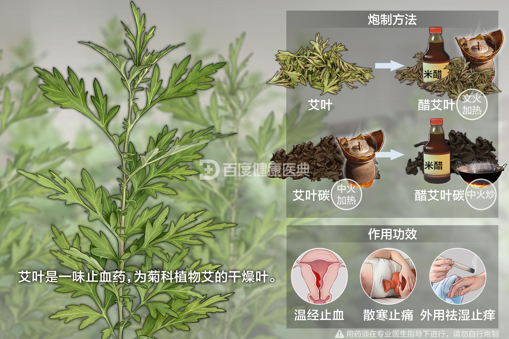紫苏叶
解表散寒，用于风寒感冒、胸闷呕吐。
桑叶
清肺润燥，用于肺热咳嗽、咽喉肿痛。
金银花
清热解毒，用于外感风热、痈肿疮疡。
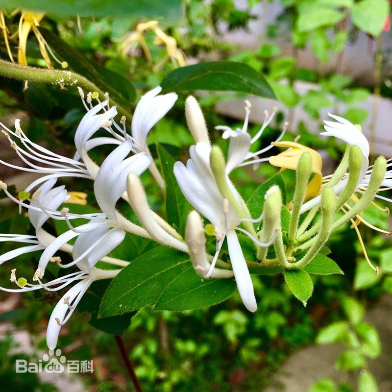辛夷
散风通鼻，用于鼻塞流涕、鼻渊头痛。
款冬花
润肺下气，用于肺热咳嗽、气逆胸闷。
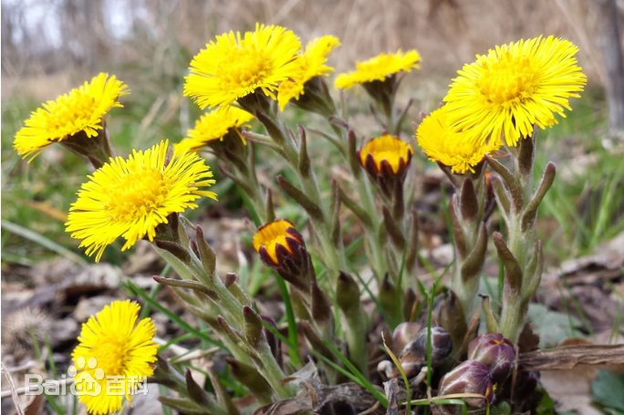
五味子
收敛固涩，用于久泻久痢、自汗盗汗。
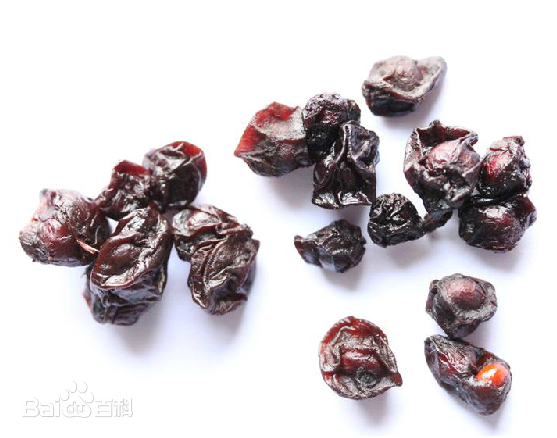
乌桕子
清热解毒，用于湿热黄疸、带下。
苦杏仁
润肺止咳，用于肺热咳嗽，但需注意其毒性。
决明子
清肝明目，润肠通便，用于肝热目赤、便秘。
菟丝子
补肾益精，用于肾虚腰痛、阳痿遗精。
青蒿
清热解暑，用于暑湿发热、疟疾。
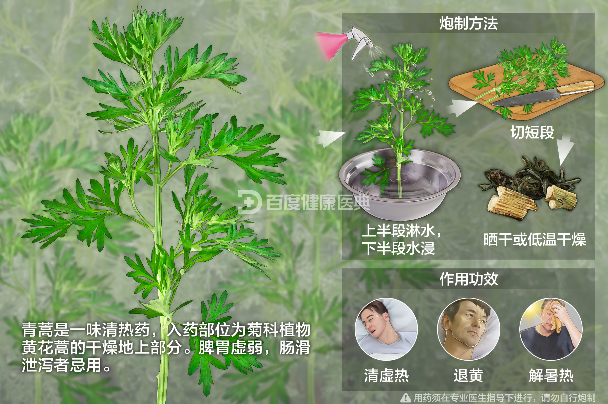茵陈
清热利湿，用于黄疸、肝炎。
鱼腥草
清热解毒，用于肺痈吐脓、热毒疮疡。
一点红
清热解毒，用于痈肿疔疮、蛇虫咬伤。
九节菖蒲
开窍醒神，用于神昏谵语、中风昏迷。
海藻
软坚散结，用于瘿瘤、瘰疬。
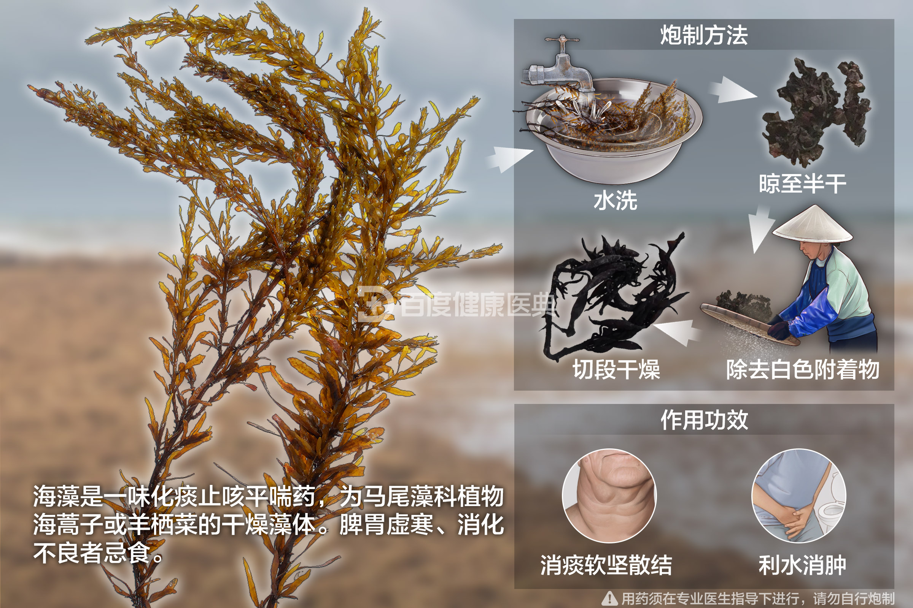
灵芝
补气安神，用于体虚乏力、失眠多梦。

水蛭
活血化瘀，用于瘀血阻滞、经闭。
地龙
活血化瘀，用于中风偏瘫、跌打损伤。

朱砂
镇静安神，用于心神不宁、失眠多梦，但有毒需慎用。
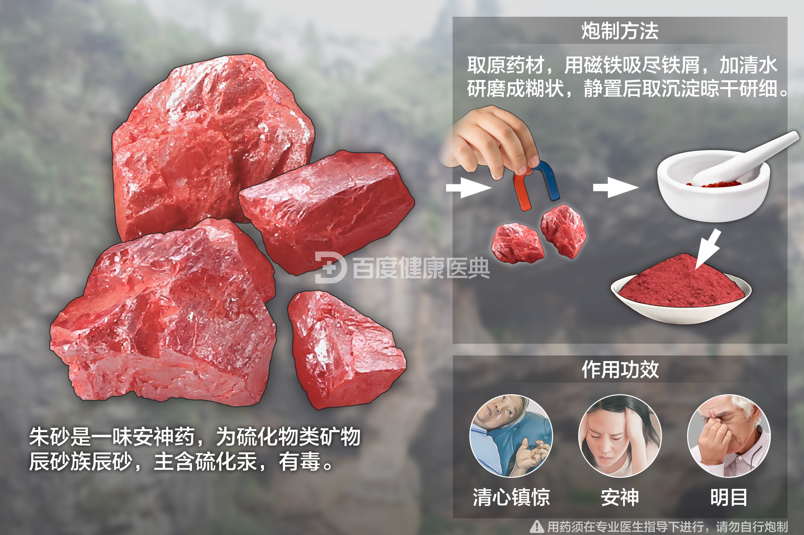雄黄
解毒杀虫，用于疮疡肿毒、蛇虫咬伤，但有毒需慎用。
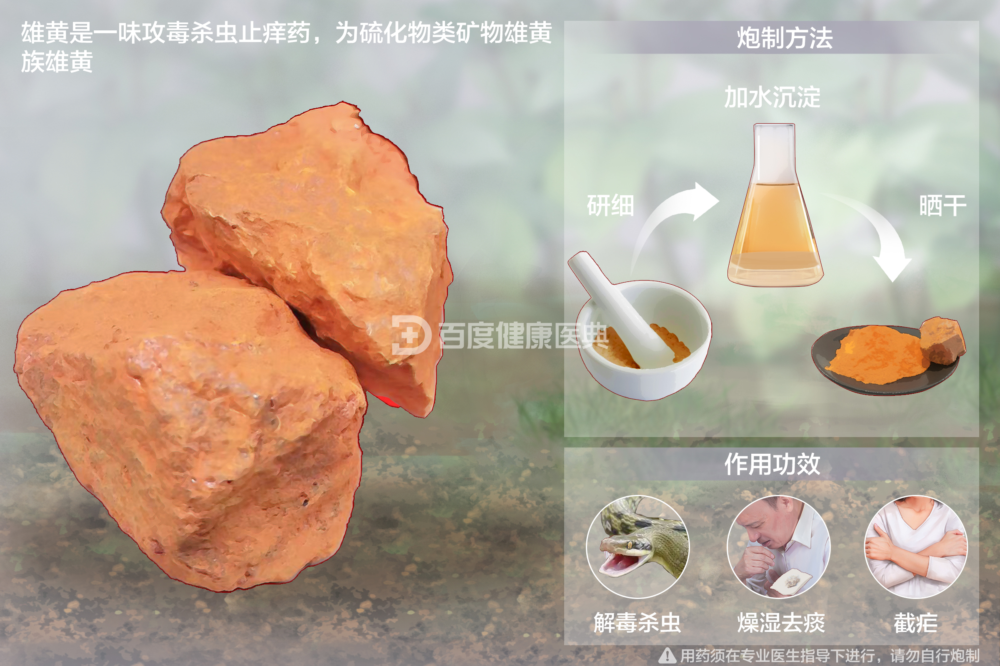